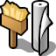

日本語
日本語 Français
Français Deutsch
Deutsch Italiano
Italiano Русский
Русский Español
Español Svenska
Svenska Українська
Українська 中文 ［中文］
中文 ［中文］ Português
Português Suomi
Suomi Slovenčina
Slovenčina Magyar
Magyar Português (Brazil)
Português (Brazil) English
English背景 (Backgrounds)
| Deskbar メニュー: | ||
| 場所: | /boot/system/preferences/Backgrounds | |
| 設定ファイル: | ~/config/settings/system/app_server/workspaces ~/config/settings/Backgrounds settings - パネルのウィンドウの位置が保存されます。 |
色や画像を各フォルダーの背景やワークスペースごとのデスクトップの背景として指定できます。

ウィンドウの一番上のプルダウンメニューを使って、変更を現在のワークスペースのみ、すべてのワークスペース、ある特定のフォルダー、新しく作成されるすべてのフォルダーのデフォルト設定のいずれに適用するか選択します。
その下のプルダウンメニューで背景の画像を指定します。シンプルに単色の背景を選択したい場合は、を選択します。画像については、ウィンドウ左側のプレビュー部分にファイルをドラッグアンドドロップすることでも指定できます。
画像を指定する場合、表示位置を決める必要があります:
| 座標位置を指定します。ウィンドウ左側のプレビュー部分で画像をドラッグすることで座標を指定することもできますし、X 座標と Y 座標を手で入力することもできます。 | ||
| 画像を画面の中央に配置します。 | ||
| アスペクト比を考慮せずに、画面にフィットするように画像を拡大します。 | ||
| 同じ画像を繰り返し表示して画面を埋めつくします。 |
を有効にすると、アイコンラベルの周囲に細い輪郭が表示されるようになります。
アイコンラベルの文字が実際は黒になるのか白になるのかは、スポイトツールの設定に依存します。暗い色が指定されていれば文字は白色で表示されますし、明るい色が指定されていれば文字は黒色で表示されます。したがって、背景に非常に明るい画像を指定する場合は、アイコンラベルを黒色にして読めるようにするために、スポイトツールでは明るい色を指定すべきです (あるいは、上のアウトラインオプションを有効にすべきです)。
背景プレファレンスで指定された色は、ワークスペースアプレットにも反映されます。このとき背景の画像については無視されます。
| 背景プレファレンスが起動された時点で有効だった設定に戻します。 | ||
| 変更を適応します。 |